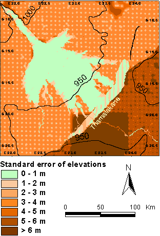

DEM accuracy

The
map shows the standard error of the topographic map. The conical
surface of the Delta gives a very accurate topographic map. The
error over this region is also generally less than 1 metre. The
area Southeast of the Thamalakane is less well covered with elevtion
data and also contains ridges and valleys. Hence the estimated
error in this region is the largest.
Link
to next page.